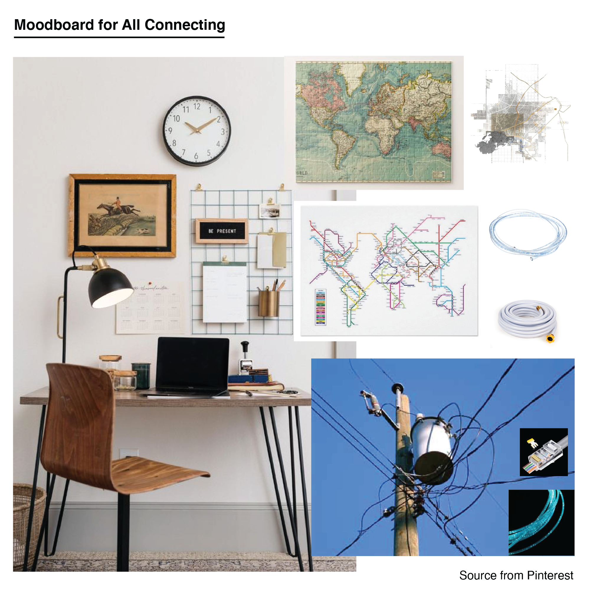

All Connecting - Video Sculpture
An interactive video sculpture that exposes the systems of the Internet in real-time.
Highlights
Tags: video sculpture, projection, real-time, MadMapper, Processing, Synphon Recorder, Max/MSP
Time: Mar. 2020
Problem Statement
How might we reinterpret the system in the digital world?
Concept
All Connecting is an interactive video sculpture that exposes the systems to the users when they make search requests online in real-time. It visualizes the flow of packets transmitting between performers in the video and servers in real-time. This project is a reinterpretation for The Wave (1965) by Hans Haacke.
Role
Creative technologist working with Carnivore library in Processing to fetch and section packets into 16 strings.
Research
Inspired by the artwork, The Wave by Hans Haacke (1965), in which he captured and analyzed the physical systems and presented them in a museum setting. We brainstormed in terms of the representations for the systems in the digital world in terms of information exchange and attention exchange.

We started off by the recent exhibition of his All Connected at the New Museum.
It was mentioned that Haacke was inspired by the ‘System Esthetics’ by Jack Burnham that analyzed the influence of Ludwig von Bertalanffy’s General System Theory (1968) on 20th century sculpture. [Source]
“inspired me to continue with my kinetic, process-oriented works, and also to expand into biological and – toward the late 1960s – to deal with social ‘systems.”
–Hans HaackeIdeation/Exploration
We then started to branch out from here to think of forms such as
- telepole and wires underground
- fiber optics that are for information transfer
- black tubes that collect the wires
- ethernet cables
We were talking about how each request from the web browser generated several packages on the back-end. We wanted to visualize the amount of packages through projection mapping since this digital system is always happening yet not being presented as is to the users.
Rough Idea

- A user enters a room with a computer in it
- He/she is prompted to do something to a computer – web browser
- We gather the packages generated
- Shows the packages generated in the room through video projection and video mapping
Testing
I was looking to get the packets from Max and I tried several methods: OSC and external CNMET, Node for Max, MaxURL. However, it didn’t work for me to get the packet data from any website.
OSC and external CNMET don’t work with my Max which was unfortunate. I used Node for Max and tried several npm libraries such as curl, http, request, and pcap (sort of work). MaxURL is good for getting the html content from a certain website.
Learn more about my strugglesDevelopment
I worked mainly on getting the packet data from the computer to processing. I then started working with processing using Carnivore library to get the packet data. I worked on getting the IP address of the receiver and sender address and compare if it is processed through my computer’s ip address. We will have 16 pipes, 8 pipes of information will be going from the sender to the receiver while the rest will be vice versa.

I wrote some code to help divide the ip address into 8 sections. Since the first part of the IP address has a range of 0-255(reference), I made sure each part has the range of 255/8. I wrote a function in processing to get all the information needed to return the text as a string which will be transported into madmapper. Below shows the packet information in the console in Processing. My code can be found here . The final combined code can be found here.
We used Syphon to project the processing content and used MadMapper to map different pipes of corresponding sections of packet data.
Solution
Here is our interpretation of Hans Haacke's The Wave.
Conclusion
I like how we still managed to work with each other and achieve an ideal end goal during COVID-19. We plan to keep working on it when we are able to fabricate things in our workplace.
Moving forward
- Refine video sculpture to be represented in the installation
- Refine the type of data being exposed to the users
- Think about ways to represent the data in terms of fading, overlapping and more
Special thanks to Wenjing Liu, and Stefan Skripak.